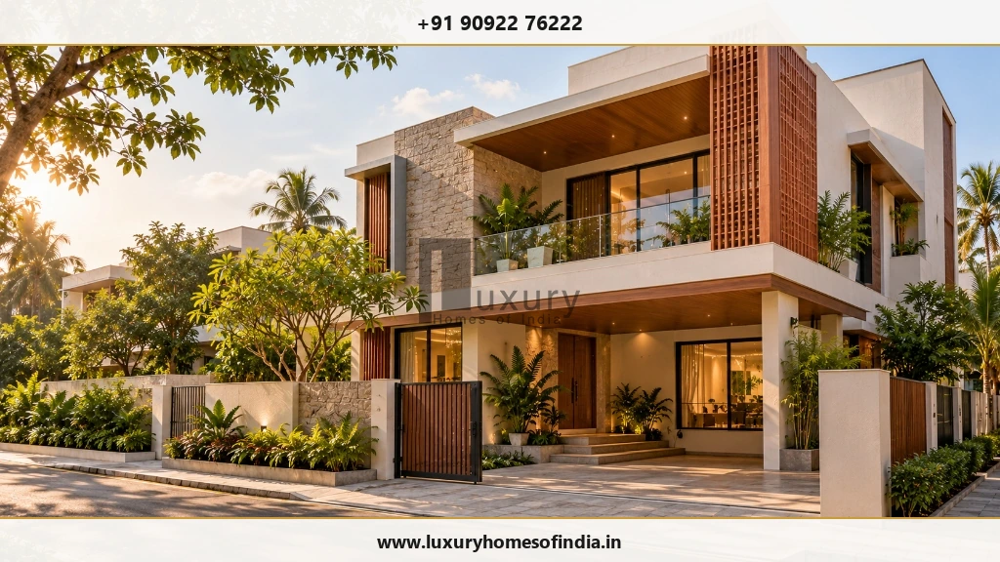
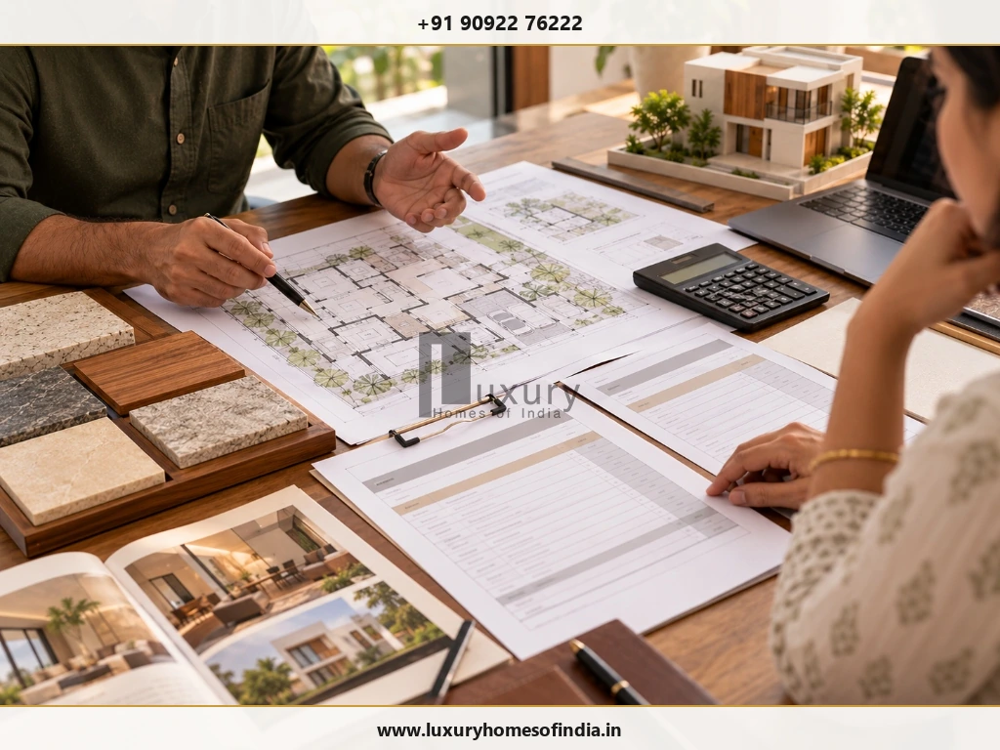
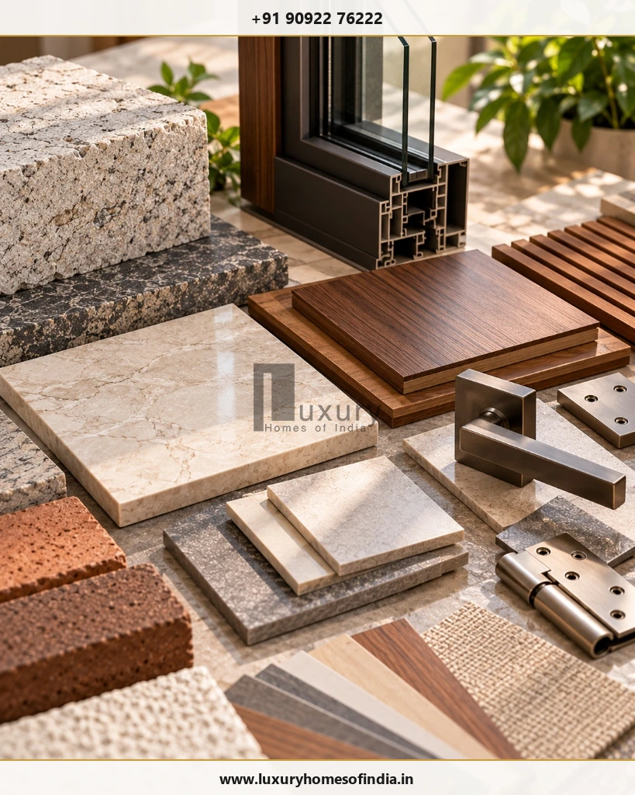
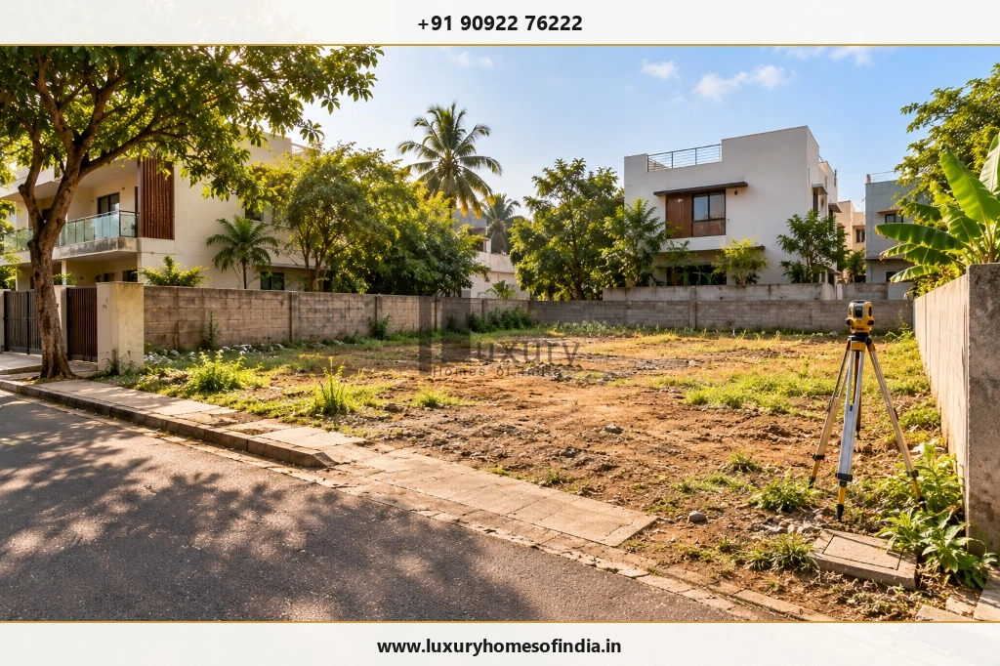
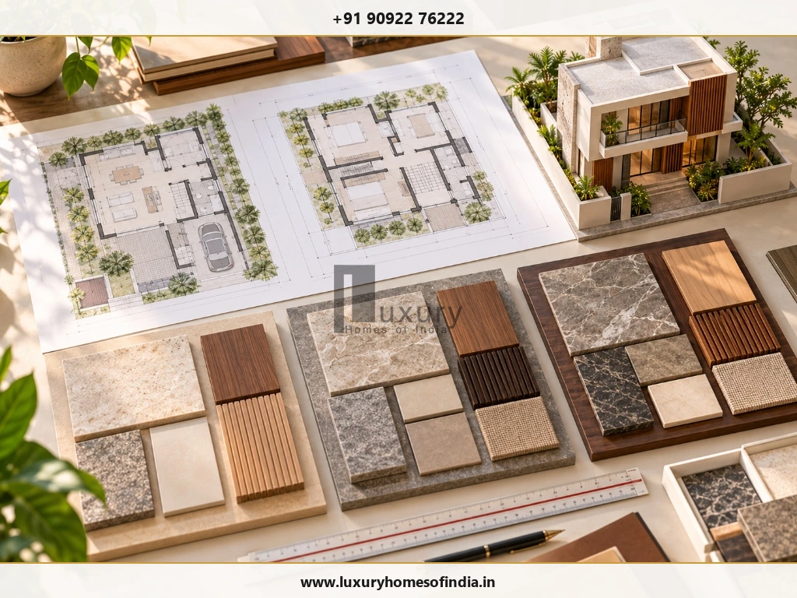

Executive Summary for Homeowners
The cost to build a villa in Chennai depends on its built-up area, architectural design, structural requirements, material specifications, interiors and site conditions. For preliminary planning, a per-square-foot construction rate can help estimate the core building cost, but it should not be mistaken for the total amount needed to complete the home. Land, professional fees, approvals, interior fit-outs, compound walls, landscaping, utility arrangements and specialist amenities may require separate budgets. The most reliable approach is to establish the proposed floor area, define the construction specification, prepare a detailed bill of quantities (BOQ) and compare quotations with identical inclusions and exclusions. This guide explains how to calculate a preliminary villa budget, understand the factors that influence cost, plan for additional expenses and prepare the right questions before appointing a construction partner. All example rates must be checked against current, credible market evidence and the actual scope of work.

1. What Is the Cost to Build a Villa in Chennai?
Villa construction cost is influenced by the size of the building, design complexity, structural requirements, selected finishes, building systems and the contractor's scope.
The original draft uses the following provisional rate bands for planning:
| Specification category | Draft reference rate per sq ft |
|---|---|
| Standard villa | ₹2,000–₹2,600 |
| Premium villa | ₹2,600–₹3,400 |
| Luxury villa | ₹3,400–₹5,000 |
These figures are preliminary market references carried forward from the original draft. They are not verified current market averages, fixed prices or official Luxury Homes of India quotations. Confirm the original sources, publication dates, specifications and exclusions before using them as current benchmarks.
The labels standard, premium and luxury are not universal technical classifications. A useful comparison must specify the materials, workmanship, fittings, systems and external works included in each quote.
For homeowners, the first question should not simply be “What is the rate per square foot?” It should be “What exactly will this rate deliver?”
2. Villa Construction Cost by Built-Up Area
A preliminary construction estimate can be calculated by multiplying the total chargeable built-up area by the applicable rate.
The following table uses the provisional rates above to illustrate the arithmetic.

| Built-up area | Standard ₹2,000–₹2,600/sq ft |
Premium ₹2,600–₹3,400/sq ft |
Luxury ₹3,400–₹5,000/sq ft |
|---|---|---|---|
| 1,500 sq ft | ₹30–39 lakh | ₹39–51 lakh | ₹51–75 lakh |
| 2,000 sq ft | ₹40–52 lakh | ₹52–68 lakh | ₹68 lakh–₹1 crore |
| 2,500 sq ft | ₹50–65 lakh | ₹65–85 lakh | ₹85 lakh–₹1.25 crore |
| 3,000 sq ft | ₹60–78 lakh | ₹78 lakh–₹1.02 crore | ₹1.02–₹1.50 crore |
| 4,000 sq ft | ₹80 lakh–₹1.04 crore | ₹1.04–₹1.36 crore | ₹1.36–₹2 crore |
These are calculations using the draft rates, not independently verified quotations or all-inclusive project budgets.
Example: Estimating a 2,500 sq ft Villa
At the draft premium rate of ₹2,600–₹3,400 per sq ft:
- Lower calculation: 2,500 × ₹2,600 = ₹65,00,000.
- Upper calculation: 2,500 × ₹3,400 = ₹85,00,000.
The resulting preliminary construction range is ₹65–85 lakh, before adding applicable items excluded from the rate.
Important: Confirm the area measurement used by each builder. Plot area, carpet area, built-up area and chargeable area are not interchangeable. Staircases, balconies, covered parking and other spaces may be treated differently depending on the quotation.
3. What Changes Between Standard, Premium and Luxury Specifications?
A higher specification can involve more than expensive flooring or decorative finishes. It may change the design process, installation requirements, coordination between trades and the number of specialist systems involved.

| Specification area | What to compare |
|---|---|
| Architecture | Standardised layouts versus bespoke planning and detailing |
| Structure | Design requirements, spans, foundation assumptions and engineering scope |
| Flooring and walls | Product type, material allowance, installation and finish |
| Doors and windows | Profiles, glazing, hardware and performance requirements |
| Bathrooms | Sanitaryware, fittings, waterproofing and accessories |
| Electrical systems | Wiring, switchgear, lighting fixtures and controls |
| Interiors | Kitchen, wardrobes, joinery, furniture and decorative finishes |
| Building systems | Air-conditioning, automation, solar and other specialist installations |
| External works | Paving, compound wall, gates, landscaping and drainage |
A project described as luxury may include some of these elements but exclude others. For example, a builder may price the building and selected finishes while treating furniture, a swimming pool, extensive landscaping or advanced automation as separate packages.
Ask for a specification schedule that identifies each product category, approved alternatives, allowances and exclusions. This makes it easier to compare quotes without paying twice for the same work.
4. How to Prepare a Realistic Villa Construction Budget
A useful budget separates the core building cost from other project expenses.
Consider a proposed 2,500 sq ft villa with customised architecture and premium finishes. The draft-rate calculation gives a preliminary core construction figure of ₹65–85 lakh. That is a starting point, not a complete project budget.
Build the estimate using separate categories:
| Budget category | Information needed |
|---|---|
| Core construction | Area, structural design and agreed specification |
| Architecture and engineering | Design scope, drawings and specialist consultancy |
| Site investigations | Survey, soil investigation and site-specific assessments |
| Approvals | Applicable permissions, fees and documentation |
| Interiors | Kitchen, wardrobes, joinery, furniture and decorative finishes |
| External development | Compound wall, gate, paving, drainage and landscaping |
| Utilities | Water storage, pumps, connections and other required systems |
| Specialist amenities | Pool, lift, solar, automation or water treatment, if selected |
| Taxes and professional charges | Applicable charges based on the actual scope |
| Contingency | Provision determined by identified project risks |
Do not automatically add every category to the construction quotation. Some items may already be included. Conversely, a low headline rate may exclude substantial finishing or external work.
A detailed BOQ, coordinated drawings and a written scope schedule help identify the actual budget requirement.
5. What Factors Affect Villa Construction Costs in Chennai?
Plot location and site conditions
Access for construction vehicles, material storage, neighbouring buildings, soil conditions and site constraints can affect the work required. Ground conditions must be assessed for the actual property rather than inferred from another house nearby.
Architectural design
Cantilevers, long spans, curved elements, double-height spaces, extensive glazing and bespoke detailing can affect structural design, quantities, fabrication and installation.
An efficient design begins by balancing the homeowner's requirements with the realities of the plot and the agreed budget.
Foundation and structural requirements
Foundation design must respond to the site investigation, proposed building loads and the structural engineer's assessment. A foundation system should not be selected solely because another property used the same approach.
Material specifications
The type and quantity of concrete, reinforcement, masonry, flooring, glazing, hardware, electrical equipment, plumbing products and waterproofing systems all contribute to cost.
Document product specifications and approval procedures for substitutions before construction begins.
Interior design and building systems
Custom cabinetry, premium kitchens, wardrobes, decorative lighting, air-conditioning, home automation and specialist amenities can require additional products, coordination and installation work.
If these items matter to your design, include them in the project brief early rather than treating them as last-minute additions.

6. Additional Expenses to Check Before Building
The complete cost of a villa may extend beyond the main construction contract.
Before finalising your budget, review the following:
- Land purchase and related transaction expenses, if applicable.
- Architectural, structural and specialist professional fees.
- Site survey and soil investigation.
- Planning permissions and applicable approval charges.
- Compound wall, gates and external paving.
- Sump, tanks, pumps and required utility arrangements.
- Kitchen, wardrobes, furniture and other interior fit-outs.
- Landscaping, outdoor lighting and drainage.
- Specialist systems and amenities.
- Applicable taxes and professional charges.
- Contingency for identified site, design and procurement risks.
Not every project needs every item. Their costs depend on the property, design, selected products, applicable requirements and contractual scope.
Related Reading: For related guidance, read LHI's home construction cost-per-square-foot and quotation guide. It addresses the scope and exclusions that need to be checked when comparing builder quotations.
8. How to Control Construction Costs Without Compromising Quality
Cost control is most effective when design decisions, procurement and construction execution are coordinated.
Finalise the main design decisions early
Resolve the floor plan, structural grid, staircase, major openings, bathrooms and service routes before the corresponding work begins.
Compare equivalent quotations
Give shortlisted builders the same drawings, specifications, measurement rules and scope requirements.
Coordinate the building systems
Resolve the locations of electrical, plumbing, air-conditioning and other services before finishes conceal the relevant work.
Approve material selections in advance
Establish product allowances, approved alternatives and the process for pricing upgrades.
Document every variation
Obtain written confirmation of changes, including their cost and schedule implications, before authorising additional work.
Inspect at appropriate stages
Arrange qualified checks of structural work, concealed services and waterproofing before subsequent work makes them inaccessible.
Safety & Integrity Note: Avoid savings that compromise structural safety, essential waterproofing or applicable building requirements.
Further Reading: For further reading, see LHI's turnkey construction guide for Chennai homeowners.
9. How Long Does It Take to Build a Villa in Chennai?
The construction programme depends on the design, approvals, site conditions, procurement, built-up area and extent of interior work.
The original draft cites a 12–18 month planning reference for a 2,000–2,500 sq ft villa, but that duration has not been independently verified for this article. Do not treat it as a guaranteed schedule or an LHI delivery commitment.
A project-specific programme should identify the intended sequence for:
- Site assessment, design and documentation.
- Engineering coordination and applicable approvals.
- Foundation and structural work.
- Masonry and building services.
- Waterproofing and finishes.
- Interior installation and external development.
- Testing, snagging and handover.
The schedule should also account for procurement lead times, inspections, changes and dependencies between trades. Ask the builder to identify key milestones and explain how progress and delays will be managed.
10. What Should a Villa Construction Quotation Include?
Before selecting a builder, check that the written quotation covers the following:

- Chargeable area and its measurement method.
- Architectural and structural scope.
- Foundation assumptions and site requirements.
- Material specifications and allowances.
- Masonry, concrete and reinforcement work.
- Electrical and plumbing scope.
- Waterproofing and testing requirements.
- Flooring, doors, windows and painting.
- Interior work included and excluded.
- External works, water storage and utility arrangements.
- Taxes and professional fees.
- Payment milestones and variation procedures.
- Proposed programme and handover requirements.
- Quality checks and defect rectification provisions.
If two builders offer different rates, ask for a comparison of their scope, material specifications, allowances and exclusions. A lower price does not necessarily mean a lower final project cost.
Frequently Asked Questions
Plan Your Villa Construction Budget With Clarity
Building a villa in Chennai requires more than selecting a rate per square foot. The final budget depends on the architectural brief, structural requirements, material choices, site conditions, interiors and external development.
Start with a transparent estimate, identify the work included in the construction package and separate additional expenses. Compare quotations against the same drawings and specifications, then confirm the programme, payment terms and variation process before proceeding.
Luxury Homes of India provides residential construction and architectural planning services. Homeowners considering a villa project can begin by organising their plot details, proposed floor area, preferred finishes and requirements for a project-specific discussion.
Contact Luxury Homes of India
- Phone: +91 90922 76222
- Email: info@luxuryhomesofindia.in
- Address: #85, 4th Floor, Lotus Tower, Guindy, Chennai – 600032
- Website: luxuryhomesofindia.in
Disclaimer: All draft-rate examples and derived calculations are for preliminary illustration only. They are not verified market averages, a binding construction quotation or a guarantee of current prices. Actual costs depend on the site, design, specifications, scope and applicable charges. Obtain a current, project-specific quotation before making financial commitments.